КЛАССИФИКАТОР ЕСКД
КЛАССЫ 71, 72, 73, 74, 75, 76
ИЛЛЮСТРИРОВАННЫЙ ОПРЕДЕЛИТЕЛЬ ДЕТАЛЕЙ
ПОЯСНИТЕЛЬНАЯ ЗАПИСКА
1.79.100
Содержание:
- Общие положения
- Класс 71. Детали - тела вращения типа колец, дисков, шкивов, блоков, стержней, втулок, стаканов, колонок, валов, осей, штоков, шпинделей и др.
- Класс 72. Детали - тела вращения с элементами зубчатого зацепления; трубы, шланги, проволочки, разрезные, секторы, сегменты; изогнутые из листов, полос и лент; аэрогидродинамические; корпусные, опорные, емкостные, подшипников
- Класс 73. Детали - не тела вращения корпусные, опорные, емкостные
- Класс 74. Детали - не тела вращения: плоскостные; рычажные, грузовые, тяговые; аэрогидродинамические; изогнутые из листов, полос и лент; профильные, трубы
- Класс 75. Детали - тела вращения и (или) не тела вращения кулачковые, карданные, с элементами зацепления, арматуры, санитарно-технические, разветвленные, пружинные, ручки, уплотнительные, отсчетные, пояснительные, маркировочные, защитные, посуда, оптические, электрорадиоэлектронные, крепежные
- Класс 76. Детали технологической оснастки, инструмента
ОБЩИЕ ПОЛОЖЕНИЯ
Иллюстрированный определитель деталей классов 71, 72, 73, 74, 75 и 76 Общесоюзного классификатора ЕСКД содержит:
классификационные характеристики и коды деталей, имеющиеся в соответствующих классах классификатора ЕСКД;
эскизы типовых деталей, помещенные в сетках классов и групп.
Иллюстрированный определитель предназначен для облегчения и ускорения поиска классификационной характеристики. Учитывая, что эскиз детали демонстрирует только одну конкретную модификацию и выполнен упрощенно, его надо рассматривать как вспомогательную информацию, помогающую понять содержание классификационного признака.
Классы деталей классификатора ЕСКД обеспечивают решение следующих задач:
поиск ранее выпущенных чертежей с целью их максимального заимствования при проектировании новых изделий с помощью информационно-поисковых систем (ИПС);
унификация и стандартизация изделий;
создание подетально-специализированных производственных подразделений (цехов, участков, поточных линий) с организацией в них группового производства;
применение обозначения изделий и их конструкторских документов в качестве единого информационного языка для автоматизированных систем при подготовке и управлении производством.
Единая структура обозначения изделия установлена ГОСТ 2.201-80.
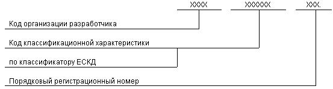
Код организации-разработчика состоит из сочетания четырех букв (прописного шрифта), назначаемый по кодификатору организаций-разработчиков.
При централизованном присвоении обозначения вместо кода организации-разработчика указывают код, выделенный для централизованного присвоения обозначения.
При групповом способе выполнения конструкторских документов обозначение исполнений должно иметь следующую структуру
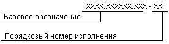
Базовое обозначение является общим для всех исполнений, оформленных одним групповым чертежом, и проставляется в графе 2 углового штампа основных надписей чертежа и в таблице исполнительных размеров для первого исполнения.
Порядковый номер исполнения присваивается для всех исполнений, кроме первого, с 01 до 99 (См. ГОСТ 2.113-75, ЕСКД. Групповые и базовые конструкторские документы.).
Код классификационной характеристики присваивают изделию и конструкторскому документу по классификатору ЕСКД.
Структура кода классификационной характеристики:
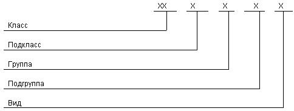
Порядковый регистрационный номер присваивают по каждой классификационной характеристике от 001 до 999:
в пределах кода организации-разработчика при децентрализованном присвоении обозначения;
при централизованном присвоении - в пределах кода организации, выделенного для централизованного присвоения.
Классификация, на основе которой формулируется такая характеристика, представляет собой десятичную иерархическую обезличенную систему с пятью уровнями деления, основанную на логическом делении множества на подмножества.
Каждый класс последовательно делится на десять подклассов, каждый подкласс, кроме нулевого, - на девять групп, каждая группа - на девять подгрупп, каждая подгруппа - на девять видов. Для кодирования классификационных группировок (подклассов, групп, подгрупп и видов) используются цифровые знаки от 1 до 9.
В нулевых подклассах каждого класса классифицируются документы (нормы, правила, требования, методы). В группе 0 классифицируются документы, общие для деталей класса, а в группах 1-9 - документы, общие для деталей соответствующих подклассов (в группе 710100 - документы, общие для деталей, классифицируемых в подклассе 711100, в группе 710200 - для деталей 711200 и т.п.).
Деление деталей на классификационные группировки осуществляется на основе классификационных признаков, характеризующих свойства деталей, наиболее существенных для решения поставленных задач.
С каждой последующей ступенью деления классифицируемого множества возрастает степень конкретности классификационных признаков.
В классах 71-75 множество деталей разделено по геометрической форме на три подмножества:
"Детали - тела вращения" (классы 71, 72);
"Детали - не тела вращения" (классы 73, 74);
"Детали - тела вращения и/или не тела вращения" (класс 75).
В классе 76 выделены детали инструмента, выполняющего самостоятельные функции, т.е. однодетальные изделия (сверла, метчики, иглы, шарошки, долота и др.), а также специфические детали технологической оснастки и инструмента, являющиеся составными частями изделий, не выполняющие самостоятельных функций (пуансоны, матрицы, пластины режущие и др.).
Геометрическая форма детали является наиболее объективным и стабильным признаком при ее описании. Этот признак почти не подвергается индивидуальной интерпретации. Геометрическая форма характеризует непосредственно деталь независимо от ее функции и принадлежности к другим изделиям.
Признаки - конструктивная характеристика отдельных элементов детали и ее взаимное расположение элементов детали - конкретизируют геометрическую форму.
Параметрический признак характеризует конструктивные параметры деталей. Он используется в классе 71 и в группах классов 74 и 75.
Наименование детали и выполняемая деталью функция используются в качестве классификационных признаков только в том случае, когда они наиболее точно характеризуют деталь и понимаются однозначно во всех отраслях техники. Например, колесо зубчатое, вал коленчатый, винт ходовой, рычаг, пружина.
Определение класса детали является исходным моментом в процессе отыскания ее классификационной характеристики, состоящим из нескольких этапов.
Пользуясь критериями отнесения деталей к классам и сетками деления классов на подклассы и группы, определяем номер группы.
По сетке группы определяем подгруппу и вид детали. Необходимо помнить, что основными являются классификационные признаки, а эскиз типовой детали только содействует поиску соответствующей классификационной группировки.
КЛАСС 71
ДЕТАЛИ - ТЕЛА ВРАЩЕНИЯ ТИПА КОЛЕЦ, ДИСКОВ, ШКИВОВ, БЛОКОВ, СТЕРЖНЕЙ, ВТУЛОК, СТАКАНОВ, КОЛОНОК, ВАЛОВ, ОСЕЙ, ШТОКОВ, ШПИНДЕЛЕЙ И ДР.
В классе классифицируются детали - тела вращения, которые делятся на три диапазона по соотношению :
с L до 0,5 включ.
с L св. 0,5 до 2 включ.
с L св. 2D,
где - длина детали; - наибольший наружный диаметр детали.
Параметрический признак, характеризующий отношение длины детали к наибольшему диаметру наружной поверхности детали, позволяет детали типа дисков, колец, фланцев, шкивов отделить от деталей типа втулок, стаканов, пальцев, барабанов и от деталей типа валов, шпинделей, осей, штоков, гильз, колонок, стержней, а также увеличивает классификационную емкость класса
Ниже приводится пример отыскания кода классификационной характеристики детали, изображенной на рис.1.
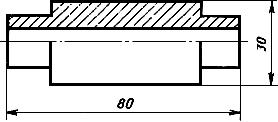
Рис.1
У изображенной детали длина больше двух диаметров, а ее наружная поверхность - цилиндрическая ступенчатая двухсторонняя без закрытых уступов и без наружной резьбы. Учитывая эти признаки, по сетке класса 71 определяем код группы - 715400, а по сетке группы, учитывая центральное сквозное отверстие, определяем вид - 715441.
Подклассы 711000, 713000, 715000
В подклассе классифицируются только детали с цилиндрической наружной поверхностью, которые делятся в группах на следующие:
гладкие, имеющие по всей длине один номинальный диаметр, без наружной резьбы (рис.2, а) и с резьбой (рис.2, б);
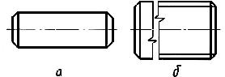
Рис.2
ступенчатые односторонние без закрытых уступов, без наружной резьбы (рис.3, а), ступенчатые двухсторонние без закрытых уступов и без наружной резьбы (рис.3, б) и ступенчатые (односторонние и двухсторонние) без закрытых уступов, но с наружной резьбой (рис.3, в и г.).
У ступенчатых односторонних деталей уменьшение номинальных диаметров происходит в одну сторону от поверхности с наибольшим размером, а ступенчатых двухсторонних - в две стороны.
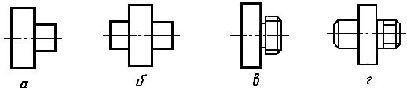
Рис.3
В каждом подклассе детали с закрытыми уступами выделены в группы:
без наружной резьбы - в группах 711600, 713600 и 715600 (рис.4, а);
с наружной резьбой - в группах 711700, 713700 и 715700 (рис.4, б).
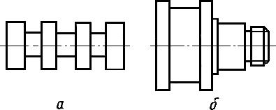
Рис.4
Форма поверхности закрытого уступа учитывается при определении формы наружной поверхности детали.
Подклассы 712000, 714000, 716000
В этих подклассах классифицируются детали следующие:
в группах 712100, 714100 и 716100 - детали с конической наружной поверхностью (рис.5, а, б и в) или из сочетаний конических поверхностей;
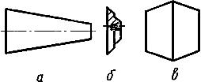
Рис.5
в группах 712200, 714200 и 716200 - детали с криволинейной наружной поверхностью (рис.6, а, б и в) или с наружной поверхностью, состоящей из сочетания криволинейных поверхностей (рис.6, г);
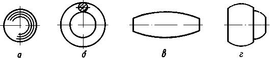
Рис.6
в группах 712300-712700, 714300-714700 и 716300-716700 - детали с комбинированной наружной поверхностью, состоящей из цилиндрических, конических и криволинейных поверхностей в различных их сочетаниях.
В каждом подклассе детали с закрытыми уступами выделены в группы:
без наружной резьбы - 712600, 714600, 716600 (рис.7, а);
с наружной резьбой - 712700, 714700, 716700 (рис.7, б).
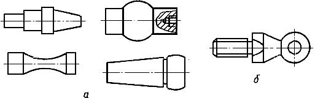
Рис.7
Примечания:
1. Кольца уплотнительные классифицируются в группе 754100.
2. Кольца карданные классифицируются в виде 751773.
3. Фаски, скругления углов, канавки для вывода инструмента, уклоны литейные и штамповочные и другие технологические элементы при классификации не учитывать.
В подгруппах детали классифицируются по отсутствию, наличию и форме центрального отверстия. Bо всех группах подклассов 711000-714000 классифицированные признаки деления на подгруппы приняты одинаковыми в соответствии с табл.1.
| Наименование классификационного признака на подгруппах |
Код в 5-м разряде обозначения |
| Без центрального отверстия |
1 |
| С центральным глухим отверстием |
без резьбы |
2 |
| с резьбой |
3 |
| С центральным сквозным отверстием, круглым в поперечном сечении |
цилиндрическим |
без резьбы |
гладким |
4 |
| ступенчатым |
5 |
| с резьбой |
6 |
| коническим, криволинейным, комбинированным |
7 |
| Резерв |
8 |
| С центральным сквозным отверстием, некруглым в поперечном сечении |
9 |
Примечание. Наличие центровых отверстий без резьбы (формы A, B, T, C, E, R по ГОСТ 14034-74) при классификации не учитываются. При наличии центовых отверстий с резьбой (формы F и H ГОСТ 14034-74) детали классифицируются как с глухим центральным отверстием с резьбой.
Делали подклассов 715000 и 716000 (кроме 716100 и 716200) имеют классификационные признаки деления на подгруппы в соответствии с табл.2.
| Наименование классификационного признака на подгруппах |
Код в 5-м разряде обозначения |
| Без центрального отверстия |
1 |
| С центральным глухим отверстием |
без резьбы |
2 |
| с резьбой |
3 |
| С центральным сквозным отверстием |
цилиндрическим |
без резьбы |
гладким |
4 |
| ступенчатым |
5 |
| с резьбой |
6 |
| коническим, криволинейным, комбинированным |
без резьбы |
7 |
| с резьбой |
8 |
| Резерв |
9 |
Детали в группах 716100 и 716200 имеют классификационные признаки деления на подгруппы в соответствии с табл.3.
| Наименование классификационного признака на подгруппах |
Код в 5-м разряде обозначения |
| Без центрального отверстия |
1 |
| С центральным глухим отверстием |
без резьбы |
2 |
| с резьбой |
3 |
| Резерв |
4 |
| С центральным сквозным отверстием любой формы |
без резьбы |
5 |
| с резьбой |
6 |
| Резерв |
7 |
| То же |
8 |
| " |
9 |
Примеры центральных сквозных отверстий, некруглых в поперечном сечении изображены на рис.8, а, б и в, в том числе на рис.8, а - со шпоночным пазом, на рис.8, б - со шлицами, на рис.8, г - эскиз детали с центральным сквозным отверстием, круглым в поперечном сечении.
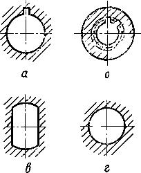
Рис.8
Центральные сквозные отверстия цилиндрические круглые без резьбы подразделяются на гладкие и ступенчатые.
Примеры ступенчатых центральных сквозных отверстий изображены на рис.9, а, б и в. Детали, изображенные на рис.9, г и имеющие канавку под сальниковые уплотнения, классифицируются как с центральным сквозным отверстием, имеющим комбинированную форму.
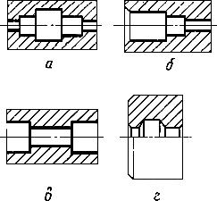
Рис.9
На видах детали - тела вращения классифицируются по конструктивным признакам, дополнительно характеризующим геометрическую форму детали. К этим признакам относятся:
пазы кольцевые на торцах детали, примеры которых изображены на рис.10, а, б и в. Детали со спицами (рис.10, г) - классифицируются как детали с кольцевыми пазами (Признак "кольцевой паз" отсутствует в группах 712100, 712200, 714100, 714200 и в подклассах 715000 и 716000.);
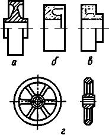
Рис.10
пазы прямолинейные (на боковой поверхности - рис.11, а и б, на торце - рис.11, в). Шлицы прямобочные - по ГОСТ 1139-80, эвольвентные по ГОСТ 6033-80 и треугольные - по нормалям автотракторной промышленности НО 39-20-61 и НО 39-21-61 (рис.11, г). На рис.11, д изображена деталь с пазами прямолинейными на боковой поверхности и круговыми на торце.
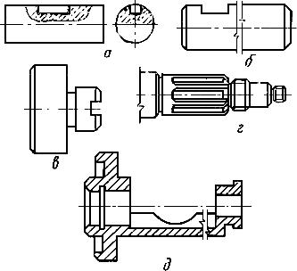
Рис.11
Детали с гранями под ключ (рис.12, а) и срезами торцев (рис.12, б и в) и с накаткой на наружной поверхности (рис.12, г) классифицируются как детали с пазами и шлицами.
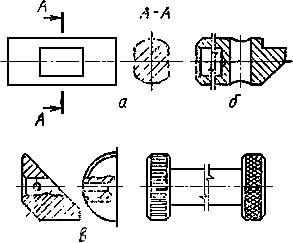
Рис.12
Признаком классификации на уровне вида является отсутствие или наличие отверстия вне оси детали. Эти отверстия могут быть цилиндрическими или коническими, глухими или сквозными, без резьбы или с резьбой, параллельными и (или) непараллельными оси детали, а также в любом из этих сочетаний. Примеры некоторых из них указаны на рис.13, а-г.
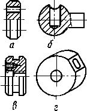
Рис.13
Примерами деталей - тел вращения с отверстиями, параллельными оси, являются:
полумуфты по ГОСТ 20761-80 и ГОСТ 21424-75;
фланцы круглые по ГОСТ 12815-80, ГОСТ 12817-80 - ГОСТ 12822-80;
детали с концентрической наружной поверхностью, но эксцентричным отверстием.
Отверстия, параллельные к оси детали, и радиальные имеют штоки поршней гидроцилиндров по ОСТ 24.073.03. Часто валы имеют отверстия, радиальные или наклонные к оси, по которым подводят охлаждение, поступающее через центральное глухое отверстие. Многие детали имеют радиальные отверстия для крепления другой детали (рис.14).
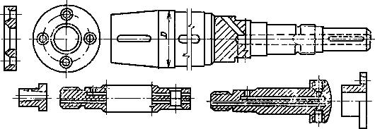
Рис.14
Примечания:
1. Детали - тела вращения с делениями классифицируются в группе 754200 "Детали измерительные". Примером таких деталей могут быть стебли и барабаны микрометров, кольца делительные и т.п.
2. Детали - тела вращения, изогнутые из листов, полос и лент (типа обечаек), классифицируются в классе 720000.
КЛАСС 72
ДЕТАЛИ - ТЕЛА ВРАЩЕНИЯ С ЭЛЕМЕНТАМИ ЗУБЧАТОГО ЗАЦЕПЛЕНИЯ; ТРУБЫ, ШЛАНГИ, ПРОВОЛОЧКИ, РАЗРЕЗНЫЕ, СЕКТОРЫ, СЕГМЕНТЫ; ИЗОГНУТЫЕ ИЗ ЛИСТОВ, ПОЛОС И ЛЕНТ; АЭРОГИДРОДИНАМИЧЕСКИЕ; КОРПУСНЫЕ, ОПОРНЫЕ, ЕМКОСТНЫЕ, ПОДШИПНИКОВ
Подкласс 721000
В данном подклассе классифицируются колеса зубчатые цилиндрические.
В приборостроении применяется большое количество мелкомодульных цилиндрических колес зубчатых одновенцовых с наружными прямыми зубьями. Колеса с прямыми зубьями классифицируются в трех группах:
с модулем до 1 мм включ. - 721100 - с эвольвентным профилем;
то же - 721200 - с неэвольвентным профилем;
с модулем св. 1 мм - 721300.
В группе 721400 классифицируются колеса зубчатые цилиндрические одновенцовые с наружными косыми зубьями.
У всех колес зубчатых с модулем св. 1 мм профиль и коррекция зубьев при классификации не учитываются.
Цилиндрические колеса зубчатые одновенцовые с наружными зубьями групп 721300 и 721400 в подгруппах подразделяются на детали:
с наружной основной базой, с консольным зубчатым (рис.15, а) и неконсольным зубчатым (рис.15, б) венцами. Они называются: с модулем до 1 мм включ. - "трибы", а с модулем св. 1 мм - "вал-шестерни";
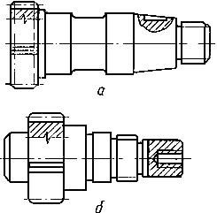
Рис.15
с внутренней основной базой без ступицы (рис.16, а), со ступицей, не выступающей за торец обода (рис.16, б), со ступицей, выступающей за торец обода с одной стороны (рис.16, в и г) и со ступицей, выступающей за торец обода с двух сторон (рис.16, д).
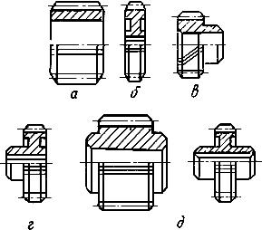
Рис.16
В отдельные подгруппы выделены венцы зубчатые (рис.17, а), зубчатые секторы (рис.17, б, в и г) и сегменты (рис.17, д).
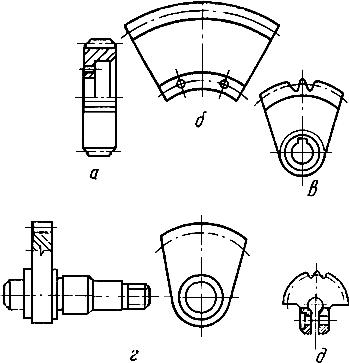
Рис.17
В видах колеса зубчатые классифицируются по градациям модулей:
в валах-шестернях учтено наличие или отсутствие центральных сквозных отверстий и шлицев как прямобочных, так и эвольвентных;
в колесах зубчатых группы 721300 учтено отсутствие или наличие на торце ступицы пазов и выступов, так как в машинах и механизмах зубчатые колеса часто включаются в кинематическую цепь путем соединения с кулачковой муфтой.
В группе 721500 классифицируются цилиндрические зубчатые колеса:
одновенцовые с внутренними зубьями (рис.18);
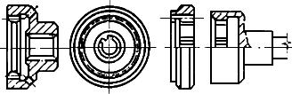
Рис.18
втулки (рис. 19, а) и обоймы муфт (рис. 19, б, в и г).
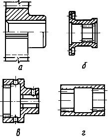
Рис.19
В группе 721600 классифицируются зубчатые колеса:
многовенцовые с наружными зубьями шевронные (рис. 20, а и б), блочные двухвенцовые (рис. 20, в) и блочные трехвенцовые (рис. 20, г);
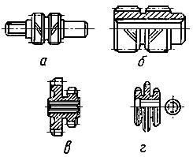
Рис.20
многовенцовые с внутренними зубьями (рис. 21, а и б) и многовенцовые с наружными и внутренними зубьями (рис. 21, в и г).
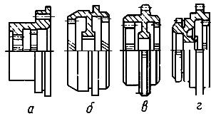
Рис.21
В видах колеса зубчатые цилиндрические одновенцовые классифицируются по интервалам величин модулей; вал шестерни - дополнительно по отсутствию или наличию центрального отверстия.
Если в многовенцовых зубчатых колесах все зубчатые венцы имеют одну величину модуля, то они относятся к признаку «одного модуля», а если хотя бы один венец имеет модуль, отличный от модулей других венцов, то они относятся к признаку «разных модулей».
Подкласс 722000
В данном подклассе колеса зубчатые конические классифицируются:
в группе 722300 - с прямыми зубьями;
в группе 722400 - с криволинейными зубьями.
Колеса зубчатые конические в подгруппах подразделяются на детали:
с наружной основной базой: трубы, вал-шестерни (рис. 22, а);
с внутренней основной базой, круглой или некруглой в поперечном сечении, без ступицы или со ступицей, не выступающей за торец обода (рис. 22, б и в), со ступицей, выступающей за торец обода со стороны большего конуса (рис. 22, г), со ступицей, выступающей за торец обода со стороны малого конуса и с двух сторон (рис. 22, д и е).
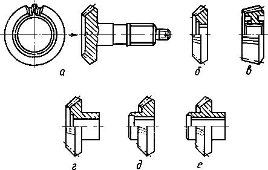
Рис.22
Колеса зубчатые конические многовенцовые классифицируются в подгруппах 722380, 722480 (рис. 23, а), а венцы (рис. 23, б), секторы, сегменты зубчатые конические (рис. 23, в и г) - в подгруппах 722390 и 722490.
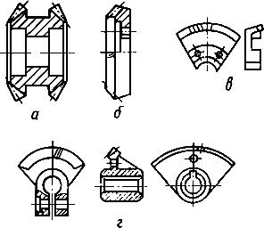
Рис.23
В видах колеса зубчатые конические классифицируются по интервалам величин модулей и дополнительно:
одновенцовые трибы и вал-шестерни - по расположению зубчатого венца и вал-шестерни - по наличию или отсутствию шлицев на наружной поверхности и наличию или отсутствию центрального отверстия;
многовенцовые - с наружной или внутренней основной базой;
секторы и сегменты конические зубчатые - кольцевые и кроме кольцевых.
В группе 722500 классифицируются колеса червячные и червяки.
В подгруппах колеса червячные подразделяются по месту расположения основной базы и ее форме (круглая, некруглая в поперечном сечении), а червяки в подгруппах подразделяются на:
цилиндрические (рис. 24, а) и глобоидные (рис. 24. б);
однозаходные и многозаходные.
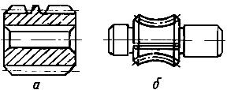
Рис.24
Червяки цилиндрические не подразделяются на эвольвентные, конволютные, архимедовые.
В отдельную подгруппу выделены детали, имеющие одновременно зубья колеса червячного и нарезку червяка.
В группе 722600 классифицируются колеса зубчатые, имеющие элементы цилиндрических, конических, червячных колес в различном их сочетании (рис. 25).
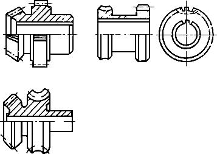
Рис.25
Подкласс 723000
В группе 723100 классифицируются трубы круглые прямые, шланги и проволочки круглые прямые.
В подгруппе трубы классифицируются по признакам:
с гладкой или ступенчатой наружной поверхностью;
без резьбы, с резьбой. У труб с утолщением стенки концов (с высадкой концов по ГОСТ 631-75, ГОСТ 633-80, ГОСТ 7909-56, ГОСТ 8467-83) этот признак учитывается на видах, показанных на рис. 26;
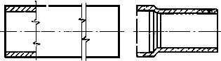
Рис.26
с торцами плоскими перпендикулярными (рис. 27, а) и неперпендикулярными (скошенными - рис 27. б) и криволинейными (рис. 27, в).
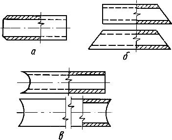
Рис.27
В видах, в основном, трубы классифицируются по наличию или отсутствию отверстий вне оси детали.
В отдельные виды выделены:
сильфоны - 723161 (рис. 28, а);
трубы гофрированные, кроме сильфонов - 723162 (рис.28, б).
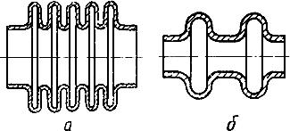
Рис.28
Шланги подразделяются в видах на гладкие и гофрированные, а проволочки - по виду торца:
с перпендикулярными торцами;
со скощенными торцами;
с закругленными торцами;
с комбинированными (скошенными и закругленными) торцами.
В группе 723200 классифицируются:
в подгруппе 723210 - втулки и кольца разрезные (рис. 29, а). Втулки и кольца, имеющие «хомут» (рис. 29, б), классифицируются как разрезные;
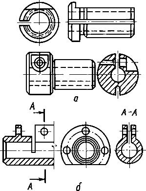
Рис.29
в подгруппе 723220 - кольца поршневые;
в подгруппе 723230 - цанги - детали, имеющие очень глубокие пазы (рис.30).
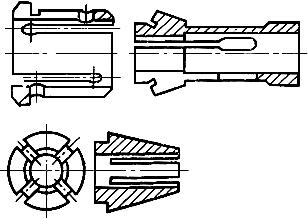
Рис.30
В отдельной группе 723300 классифицируются секторы и сегменты, кроме изогнутых из листов, полос и лент.
Детали секторные подразделяются на «Секторы кольцевые» и «Секторы некольцевые».
Детали сегментные подразделяются на «Сегменты некольцевые» и «Сегменты кольцевые».
К секторам также относятся детали, подобные изображенным на рис. 31, а, когда прямые линии, если их продолжить, пересекутся в одной точке, расположенной внутри окружности, очерченной радиусом сектора и имеющие базовое отверстие в центре или наружную основную базу, ось которой также расположена в центре (рис. 31, б).
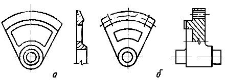
Рис.31
Секторы кольцевые с углом до 180° классифицируются в подгруппе 723320 по градациям величины центрального угла.
Учитывая специфичность классификационных признаков, секторы кольцевые лабиринтовых уплотнений выделены в самостоятельную подгруппу 723310:
радиальные елочные (рис. 32, а) и кроме елочных (рис. 32, б);
аксиальные (рис. 32, в) и радиально-аксиальные (рис. 32, г).
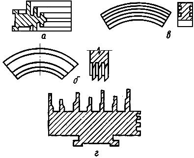
Рис.32
Сегменты классифицируются в подгруппах 723350 и 723360.
В подгруппе 723370 выделены полукольца с углом 180°, т. е. имеющие поверхность разъема, проходящую через центр детали (рис. 33).
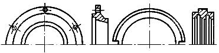
Рис.33
В группе 723400 классифицируются детали - тела вращения, изогнутые из листов, полос и лент с незамкнутым контуром в сечении.
В подгруппах 723410 и 723420 классифицируются секторы, изогнутые из листов, полос и лент:
на подгруппах - по форме наружной поверхности;
на видах - по величине угла загиба.
В подгруппе 723430 классифицируются детали, кроме секторов и обечаек подобно изображенным на рис. 34, б.
В подгруппах 723450 и 723460 классифицируются детали с местными изгибами (рис. 34, а).
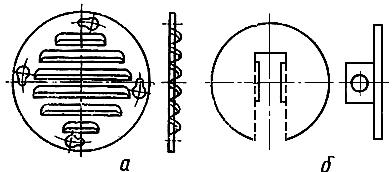
Рис.34
К аэрогидродинамическим деталям, создающим или направляющим поток жидкости, газа, воздуха относятся рабочие колеса насосов, компрессоров, вентиляторов, а также диски турбин и направляющие аппараты, классифицируемые соответственно в группах 723500 и 723600.
В группе 723500 классифицируются колеса рабочие насосов, компрессоров, вентиляторов и турбин и подразделяются на:
с односторонними входами (с открытыми, полуоткрытыми и закрытыми лопатками (рис. 35, а, б и в, соответственно);
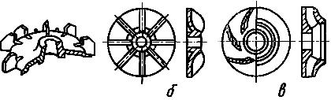
Рис.35
с двухсторонним входом, (с открытыми, полуоткрытыми лопатками - рис. 36, а и с закрытыми лопатками - рис. 36, б);
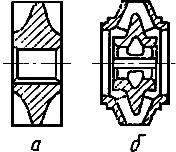
Рис.36
на радиальные (центробежные) и радиально-осевые (диагональные).
У радиальных (центробежных) колес выходной торец лопатки расположен параллельно оси колеса (рис. 37, а), а у радиально-осевых - под углом к оси колеса (рис. 37, б и в).
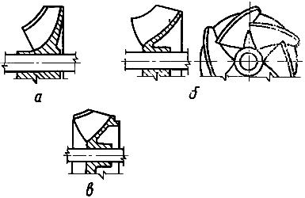
Рис.37
В видах рабочие колеса классифицируются:
на открытые, полуоткрытые и закрытые (рис. 38, а, б и в, соответственно).
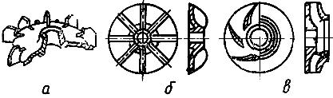
Рис.38
По виду разгрузки. Признаком разгрузки рабочего колеса является наличие отверстия в диске колеса, расположенного около ступицы (рис. З9, а), или радиально расположенных лопаток с обратной стороны диска (рис. 39, б).
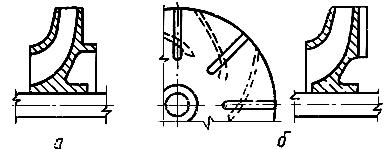
Рис.39
В отдельные подгруппы выделены:
диски, покрывающие рабочие колеса насосов, вентиляторов и компрессоров с пазами или отверстиями под лопатки - 723560;
диски турбин и компрессоров с пазами под хвостовики лопаток - 723570. На рис. 40, а, б, в и г соответственно изображены диски турбин под лопатки с хвостовиками: Т-образным, вильчатым, грибовидным и елочным;
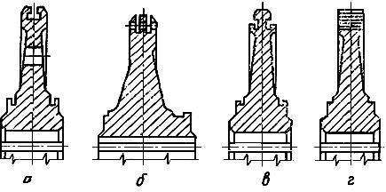
Рис.40
винты насосов циклоидальные (рис. 41, а), синусоидальные (рис. 41, б) и ступицы винтов гребных с отверстиями под лопасти - 723580;
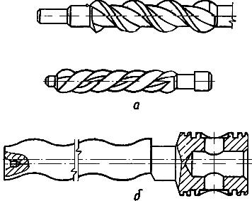
Рис.41
поршни, головки и тронки поршней сборных - 723590.
В группе 723600 классифицируются:
направляющие аппараты насосов и компрессоров турбин, имеющих каналы сложной конфигурации для прохода пара, газа, воды (рис. 42);
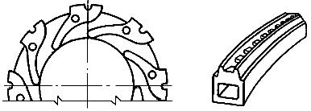
Рис.42
направляющие и дозирующие топливоподачи газовой аппаратуры (рис. 43);
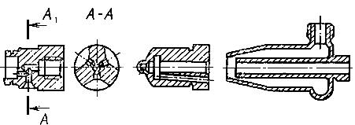
Рис.43
подводы и отводы, выделенные в подгруппы 723670 и 723680 - (рис. 44).
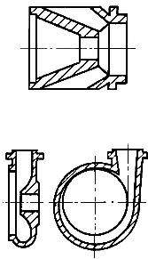
Рис.44
Подкласс 724000
В данном подклассе классифицируются корпусные и опорные детали, являющиеся телами вращения.
В группе 724100 классифицируются державки инструмента, а в группе 724200 - детали корпусные, кроме державок инструмента:
с плоской основной базой (рис. 45, а);
с неплоской основной базой (рис. 45, б).
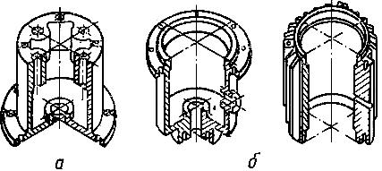
Рис.45
В группе 724500 классифицируются детали опорные.
Опорные детали часто имеют Т-образные пазы, предназначенные для крепления других деталей. Они могут быть прямолинейными (рис. 46, а) и кольцевыми (рис. 46, б).
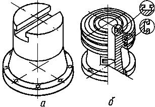
Рис.46
Примером опорных деталей - тел вращения также может служить поворотная колонна радиально-сверлильного станка, по которой траверса, несущая суппорт, перемещается вверх и вниз, а также поворачивается вокруг оси колонны.
Подкласс 725000
В данном подклассе классифицируются емкостные детали - тела вращения:
в группе 725300 - «Кроме изогнутых из листов, полос и лент». В подгруппах они подразделяются на закрытые и открытые. К закрытым относятся детали, имеющие горловину (рис. 47);
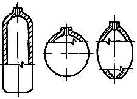
Рис.47
в группе 725100 - «Детали, изогнутые из листов, полос и лент без отбортовки наружного контура» (рис. 48, а);
в группе 725200 - «Детали, изогнутые из листов, полос и лент с отбортовкой наружного контура» (рис. 48, б). В обеих группах должен быть замкнутый контур хотя бы в одном сечении.
Рис.48
В подгруппах они подразделяются на:
открытые с одной стороны (рис. 49, а);
открытые с противоположных сторон (рис. 49, б);
открытые со смежных сторон (рис. 49, в);
закрытые (рис. 49, г).
Рис.49
В видах детали классифицируются:
по наличию (рис. 51) или отсутствию местных изгибов;
по наличию (рис. 50, а) или отсутствию отверстия в дне. Отверстие в дне по ГОСТ 18970-84 может быть без отбортовки (рис. 50, а) или с отбортовкой (рис. 50, б).
Рис.50
К местным изгибам здесь и в последующих классах относятся: рельефная формовка (рис. 51, а), жалюзи (рис. 51, б), надрезки (рис. 51, в иг), проколка с отбортовкой по внутреннему контуру с отбортовкой центрального отверстия (рис. 51, д) по ГОСТ 18970—84.
Рис.51
Подкласс 726000
В данном подклассе классифицируются детали подшипников качения и скольжения:
кольца наружные и упорных подшипников качения - в группе 726100;
кольца внутренние подшипников качения - в группе 726200;
сепараторы и тела качения подшипников качения - в группе 726300;
вкладыши и обоймы подшипников скольжения;
кольца шарнирных подшипников (по ГОСТ 3635-78) и, камни приборные - в группе 726400.
Вкладыши подшипников скольжения радиальные (опорные) изображены на рис. 52, а и б, вкладыши осевые (упорные - на рис. 52, в и вкладыши радиально-осевые (опорно-упорные) - на рис. 52, г и д. Вкладыши могут быть без пазов под заливку (рис. 52, а) и с пазами под заливку баббитом (рис. 52, б-д). Обоймы вкладышей подшипников скольжения (рис. 52, е) и кольца шарнирных подшипников, которые включены в альбом стандартов на подшипники качения, по своему существу являются подшипниками скольжения.
Рис.52
КЛАСС 73
ДЕТАЛИ - НЕ ТЕЛА ВРАЩЕНИЯ КОРПУСНЫЕ, ОПОРНЫЕ, ЕМКОСТНЫЕ
Подкласс 731000
В данном подклассе классифицируются корпусы машин и механизмов, не являющиеся телами вращения и не имеющие плоскостей разъема.
Корпусы с плоской основной базой классифицируются в трех группах:
с призматической наружной поверхностью, которая образована плоскими поверхностями (рис. 53, а). При этом наружная поверхность корпуса может включать в себя различные элементы тела вращения, выступы и уступы различной формы - 731100 (рис. 53, б);
Рис.53
с криволинейной наружной поверхностью, которая образована сочетанием криволинейных (рис. 54, а) или криволинейных и плоских поверхностей, при условии, что плоские участки наружной поверхности не образуют трехгранных углов (рис. 54, б) - 731200;
Рис.54
с комбинированной наружной поверхностью, образованной криволинейными и плоскими поверхностями, у которых плоские участки образуют один или несколько трехгранных углов (рис. 55) - 731300.
Рис.55
В группе 731400 классифицируются корпусы с неплоской основной базой, которые на подгруппах подразделяются по форме наружной поверхности (рис.56).
Рис.56
Корпусы арматуры классифицируются в группах:
с расположением плоскости седла параллельно оси трубопровода (рис. 57, а) - 731600;
с расположением плоскости седла непараллельно оси трубопровода (рис. 57, б, в и г) - 731700;
бесседельные (рис. 57, д) - 731800.
Рис.57
Понятия «основная база» и «вспомогательная база» приведены в ГОСТ 21495-76.
Необходимо помнить, что крепежные отверстия не являются базовыми отверстиями и при классификации корпусных деталей их расположение, не учитывается.
Детали корпусные групп 731100-731400 классифицируются в подгруппах и видах, в основном по количеству базовых отверстий, их расположению относительно основной базы и между собой. В отдельные подгруппы выделены корпусные, не имеющие плоских вспомогательных баз. В группе 731200 есть дополнительные признаки наличия кольцевых или спиральных полостей и патрубков.
Корпусы в группе 731400 классифицируются в подгруппах по форме наружной поверхности и количеству базовых отверстий.
Корпусы групп 731600-731900 классифицируются:
в подгруппах по расположению патрубков корпуса (на одной оси - рис. 58, а, не на одной оси - рис. 58, б, под углом - рис. 58, в);
Рис.58
на видах - по форме патрубков.
По форме патрубков корпусы могут быть:
корпусы с патрубками без резьбы и без утолщений, которые присоединяются к трубопроводу сваркой (рис. 59, с);
корпусы с патрубками без резьбы, но с утолщениями - с фланцем (рис. 59, б) и без фланца (под стяжную муфту - рис. 59, в или под дюритовое соединение - рис. 59, г);
Рис.59
корпусы с резьбой наружной (рис. 60, а) или внутренней (рис. 60, б);
Рис.60
комбинированные.
Подкласс 732000
В данном подклассе классифицируются детали корпусов с. поверхностью разъема:
детали корпусов с одной поверхностью разъема, параллельной основной базе - группа 732100;
с одной поверхностью разъема, непараллельной основной базе - группа 732200;
с двумя поверхностями разъема - группа 732300.
На рис. 61, а изображен корпус, состоящий из трех частей:
корпус нижний, имеющий поверхность разъема, параллельную основной базе;
корпус средний, имеющий две параллельные между собой поверхности разъема;
корпус верхний, имеющий одну поверхность разъема, совмещенную с основной базой.
На рис. 61, б - корпус нижний с поверхностью, разъема, непараллельной. основной базе.
Рис.61
Поверхности разъема могут проходить по оси одного или нескольких базовых отверстий, или по оси выходного патрубка.
Корпусы турбин паровых и газовых, компрессоров, насосов и т. п. имеют полости цилиндрические (рис. 62, а) или спиральные (рис. 62, б), а также патрубки (один или несколько) для подвода и отвода рабочего тела: воды, газа, жидкости. Для их классификации предусмотрены самостоятельные подгруппы 732160 и 732170, 732130 и 732140.
Рис.62
Подкласс 733000
В данном подклассе классифицируются опорные детали, не имеющие направляющих поверхностей:
типа кронштейнов, стоек, щитов электрических машин и другие некоробчатые - в группах 733100 и 733200, с разделением на подгруппы по форме и расположению баз, а на видах - по признакам, уточняющим форму, баз (рис. 63).
Рис.63
Примечание. Детали, изогнутые из листов, полос и лент, хотя и выполняющие функции опорных (кронштейны, стойки), должны классифицироваться в подклассе 745000.
типа рам, оснований, тумб и колонн коробчатых - в группах 733400 и 733500, с разделением их по форме наружной поверхности (рис. 64).
Рис.64
На подгруппах эти детали классифицируются по количеству и расположению вспомогательных баз, а на видах - в основном по форме вспомогательных баз.
Подкласс 734000
В данном подклассе классифицируются опорные детали, имеющие направляющие поверхности. В группах они подразделяются по месту расположения направляющих поверхностей:
на основной базе - детали типа кронштейнов» стоек, люнетов, суппортов и других некоробчатых деталей (рис. 65, а и б) - группа 734300; типа столов прямоугольных, задних бабок, хоботов и других коробчатых (рис. 65, в, г и д) - группа 734400;
Рис.65
на вспомогательных базах - детали типа станин горизонтальных (рис. 66, а) и вертикальных (рис. 66, б), траверс (рис. 66, в) и др. - группа 734500;
Рис.66
на основной и вспомогательных базах - детали типа салазок (рис. 67, а), станин горизонтально-вертикальных (рис. 67, б) - группа 734600.
Рис.67
В подгруппах все детали классифицируются по форме направляющих поверхностей, а в видах:
по форме вспомогательных баз и наличию Т-образных пазов - группа 734300;
по форме наружной поверхности - группа 734400;
по расположению направляющих поверхностей - группа 734500 и 734600.
Формы направляющих поверхностей подразделяются на плоские (рис. 68, а), призматические (рис. 68, б), типа «ласточкин хвост» (рис. 68, в), комбинированные (рис. 68, г).
Рис.68
Направляющие могут быть прямолинейными (рис. 69, а) и кольцевыми (рис. 69, б).
Рис.69
Подкласс 735000
В данном подклассе классифицируются детали емкостные, не являющиеся корпусными или опорными деталями и не имеющие форму тела вращения; к ним относятся резервуары, кожухи, крышки, поддоны, капоты, коробки, футляры, донья, укладки и другие коробчатые детали,
Детали, не изогнутые из листов, полос и лент, классифицируются в группе 735200. В подгруппах они подразделяются по форме наружной поверхности (кроме деталей из мягких материалов), а в видах - на «Откидные» и «Кроме откидных» и по наличию патрубков и отверстий.
Примеры деталей откидных приведены на рис. 70, а и кроме откидных (накладные) - на рис. 70, б.
Рис.70
Детали емкостные, изогнутые из листов, полос и лент, классифицируются в группах 735300-735600 только при условии, если есть замкнутый контур, хотя бы в одном сечении. Если ни в одном из сечений нет замкнутого контура, то детали, изогнутые из листов, полос и лент, классифицируются в подклассе 745000.
В группах эти детали подразделяются по форме наружной поверхности н по наличию или отсутствию отбортовки наружного контура.
В подгруппах они классифицируются следующим образом:
открытые с одной стороны (рис. 71, а);
открытые с противоположных сторон (рис. 71, б);
открытые со смежных сторон (рис. 71; в);
гладкие и ступенчатые (рис. 71, г).
Рис.71
В отдельную подгруппу выделены закрытые.
КЛАСС 74
ДЕТАЛИ - НЕ ТЕЛА ВРАЩЕНИЯ: ПЛОСКОСТНЫЕ; РЫЧАЖНЫЕ, ГРУЗОВЫЕ, ТЯГОВЫЕ; АЭРОГИДРОДИНАМИЧЕСКИЕ; ИЗОГНУТЫЕ ИЗ ЛИСТОВ, ПОЛОС И ЛЕНТ; ПРОФИЛЬНЫЕ, ТРУБЫ
Подкласс 741000
В данном подклассе классифицируются плоскостные детали с параллельными основными плоскостями.
Детали с гладкими основными плоскостями без пазов и с прямолинейным контуром в плане, учитывая их большое количество, классифицируются в группах 741100 и 741200 (рис. 72):
Рис.72
в подгруппах - по уточнению контура детали и по параметрическому признаку (с L до 3В и с L св. 3B), при этом надо исходить из правила, что L>B>H, где L - длина детали, B - ширина детали H - высота детали;
в видах - по отсутствию или наличию и форме отверстий.
В группе 741300 классифицируются детали гладкие с криволинейным и комбинированным контурами в плане (рис. 73).
Рис.73
В подгруппах детали подразделяются по форме контура основной плоскости. Детали с комбинированным контуром подразделяются с . учетом формы криволинейного участка.
На рис. 74 приведены примеры деталей с элементами криволинейности контура: выпуклым, вогнутым, комбинированным (рис. 74, а, б и в, соответственно). В отдельную подгруппу 741390 выделены детали с периодически повторяющимся элементом контура (типа гребенок - рис. 74, г). Под периодически повторяющимися элементами контура понимаются такие, которые одинаковы по форме и размерам и их количество равно трем и более.
Рис.74
Признаки классификации в вида такие же, как и в группах 741100 и 741200.
В группе 741400 классифицируются детали с гладкими основными плоскостями, на которых имеются пазы прямолинейные (рис. 75, а или криволинейные (рис. 75, б). Пазы могут быть одновременно на основных плоскостях и гранях (рис. 75, в).
Рис.75
Пазы, расположенные по контуру, входят в описание контура основных плоскостей. Деталь, изображенная на рис. 76, должна классифицироваться как деталь с вогнутым контуром, а не деталь с пазами.
Рис.76
Примечания:
1. Детали плоскостные с надписями классифицируются в группах 754300 и 754400 «Детали пояснительные».
2. Детали плоскостные с делениями классифицируются в группе 754200 «Детали измерительные».
3. Детали из Мягких материалов (тканей, кожи и др.) при отсутствии швов классифицируются в группах 741100-741300.
4. Детали, изогнутые из листов, полос и лент, а также изготовленные из стандартных профилей (угловые, швеллерные и т. п.), к плоскостным деталям не относятся и классифицируются соответственно в подклассах 745000 и 746000.
В группе 741500 классифицируются детали с параллельными основными плоскостями ступенчатыми с одной стороны (рис. 77, а, б и в), а в группе 741600 - с основными плоскостями ступенчатыми с двух сторон (рис. 77, г).
Рис.77
К плоскостным деталям относятся и такие, у которых на основных плоскостях имеются выступы или уступы криволинейной формы в поперечном сечении. Детали изображенные на рис. 78, классифицируются по группам 741500 (рис. 78, а) и 741600 (рис. 78, б).
Рис.78
Подкласс 742000
В данном подклассе классифицируются:
плоскостные детали с непараллельными плоскостями (клинья, призмы, колосники и др.);
накладные направляющие станин, столов, траверс, суппортов и т. п. деталей;
державки инструмента.
В группе 742100 классифицируются детали с непараллельными плоскостями.
В подгруппах эти детали подразделяются по расположению наклонной поверхности (уклона):
по длине детали (рис.79);
Рис.79
по плоскости, перпендикулярной длине детали на одной основной плоскости (рис. 80, а) и на двух основных плоскостях, применяемые в электрических машинах для укрепления обмотки магнитопровода ротора (рис. 80, б). Детали, изогнутые из листов, полос и лент (подобные изображены на рис. 80, в); классифицируются в подклассе 745000;
Рис.80
по длине детали и одновременно по плоскости, перпендикулярной длине детали (рис. 81).
Рис.81
Примечание. При отнесении плоскостных деталей к деталям с непараллельными плоскостями не учитываются: ребра жесткости скошенные (наклонные) под непрямым углом к другим поверхностям; уклоны технологические (на отливках, штамповках и т. д.).
В группе 742200 классифицируются накладные направляющие.
В подгруппах эти детали подразделяются по форме направляющих на следующие:
плоские,(рис. 82, а) и плоские угловые (рис. 82, б);
Рис.82
призматические симметричные (рис. 83, а) и несимметричные (рис. 83, б);
Рис.83
типа «ласточкин хвост» (рис. 84);
Рис.84
комбинированные (рис.85).
Рис.85
В видах эти детали, в основном, подразделяются на «охватывающие» и «охватываемые» без отверстий и с отверстиями.
Подкласс 743000
В данном подклассе классифицируются детали рычажные, шатунные, кулисные, грузовые и тяговые (рычаги, коромысла, шатуны, детали сборных шатунов, кулисы и камни кулисные, крюки, рымы, тяги с проушинами, якори цепей, ремни, детали сцепок тяговых и др.).
В группах 743100-743300 рычаги классифицируются по количеству плеч.
Если базовые отверстия расположены на одной прямой и по одну (сторону от основного базового отверстия, часть рычага между основным н крайним базовым отверстием рассматривается как одно плечо. На рис. 86, а изображен рычаг двуплечий, а на рис. 86, б - трехплечий.
Рис.86
К рычагам с вилками относятся детали, у которых раздвоение плеч происходит за пределами ступичной части основного базового отверстия (рис. 87, а). Основным базовым отверстием рычага следует считать отверстие, расположенное не на плечах, а в главной ступице рычага (рис. 87, б).
Рис.87
В подгруппах рычаги классифицируются по отсутствию или наличию вилок, педалей, рукояток и расположению плеча, а в видах - по количеству базовых отверстий, их форме и расположению.
Рычаги с элементами зубчатого зацепления классифицируются в подгруппах 743290 и 743390.
Шатуны классифицируются в подгруппе 743410 и подразделяются на две основные разновидности:
без элементов для сочленения, без плоскости разъема (рис. 88, а) и с плоскостью разъема (рис. 88, б);
с элементами для сочленения - одним (рис. 88, в), двумя и более (рис. 88, г)..
Рис.88
Под элементом для сочленения следует понимать отверстия в головке шатуна в двигателях внутреннего сгорания с V-образным и звездообразным расположением цилиндров.
В группе 743420 классифицируются основные детали сборных шатунов. Болты шатунные классифицируются в подклассе 758000.
В остальных подгруппах группы 743400 классифицируются кулисы и камни кулисные.
В группе 743600 классифицируются детали грузоподъемные и тяговые: крюки грузоподъемные и тяговые, якори, лапы якорей, соединительные звенья разборных цепей, коуши, детали такелажные, ремни, клиновые и плоские, ленты, канаты и детали сцепок тяговых.
В качестве примера приведены крюки однорогие с хвостовиком (рис. 89, а), с проушиной (рис. 89, б), двурогие с хвостовиком (рис. 89, в) и с плоской основной базой (рис. 89, г).
Рис.89
Подкласс 744000
В данном подклассе классифицируются аэрогидродинамические детали - не тела вращения. К этим деталям относятся лопатки турбин, компрессоров, лопасти гидротурбин, а также вставки межлопаточные, которые классифицируются в группах 744100 и 744200, а лопатки с переменным профилем рабочей части и лопасти гидротурбин - в группах 744300 и 744400.
Примеры лопаток с постоянным профилем рабочей части с Т-образным хвостовиком, с зубчиковым хвостовиком, замковые, без хвостовика и вставки межлопаточные изображены соответственно на рис. 90, а, б, в, г и д.
Рис.90
Рабочая часть постоянного профиля имеет в любом поперечном сечении один профиль.
Примеры лопаток, с переменным профилем рабочей части с Т-образным хвостовиком, с вильчатым хвостовиком, с грибовидным хвостовиком и без хвостовика изображены соответственно на рис. 91, а, б, в и г.
Рис.91
Рабочая часть переменного профиля имеет в каждом поперечном сечении различный профиль.
На рис. 92, а и б приведены примеры лопаток с полками сборных рабочих колес воздуходувок, применяющихся в черной металлургии, а на рис. 92, в лопасть с рабочей частью переменного профиля и фланцем.
Рис.92
Подкласс 745000
В данном подклассе классифицируются детали, изогнутые из листов, полос и лент с незамкнутым контуром в поперечном сечении.
Примечание. Детали, имеющие замкнутые контуры хотя бы в одном из сечений, классифицируются в подклассе 725000 - детали тела вращения и 735000 - детали не тела вращения.
В группе 745100 классифицируются детали только с местными изгибами.
В подгруппах эти детали классифицируются По контуру в плане, разновидности местных изгибов и наличию или отсутствию отверстий.
Виды местных изгибов приведены на рис. 51.
В группах 745200 и 745400 классифицируются детали с прямыми параллельными осями изгибов (рис. 93). В подгруппах и видах они подразделяются:
по форме изгиба (угловые и радиусные);
по направлению изгиба - однонаправленные и разнонаправленные.
Однонаправленные - когда все изгибы детали идут только по движению или только против движения часовой стрелки (рис. 93, а, б и в). Разнонаправленные - когда направление изгиба детали идет и по движению и против движения часовой стрелки (рис. 93, г и д);
Рис.93
по контуру, полок - прямолинейным (рис. 94, а) и непрямолинейным (рис. 94, б, и в).
Детали с прямолинейным контуром полок подразделяются дополнительно по соотношению L/H, где L - длина детали по оси изгиба, а H - наибольшая высота полок.
В отдельную подгруппу выделены детали «Закрытые», у которых полки направлены навстречу друг к другу и при их продлении имеют тенденцию к замыканию (см. рис. 93, б).
В видах детали подразделяются по дополнительной характеристике полок - выпуклым (см. рис. 94, а и б) и вогнутым (см. рис. 94, в), наличию или отсутствию местных изгибов и отверстий.
Рис.94
В группе 745500 классифицируются детали с прямыми непараллельными осями изгибов без дополнительных изгибов полок (рис. 95, а). и с дополнительными изгибами полок - открытые (рис. 95, б) и закрытые (рис. 95, в).
Рис.95
В группе 745600 классифицируются детали с непрямыми осями изгибов (рис. 96, а-г). Эти детали могут дополнительно иметь изгибы с прямой осью (рис. 96, д) и (или) местные изгибы.
Рис.96
Подкласс 746000
В данном подклассе классифицируются профильные детали, профиль которых совпадает с профилем исходной заготовки. Эти детали изготовляются из фасонного проката, гнутых прессованных и литых профилей.
В группе 746100 классифицируются детали из:
угловых равнополочных профилей по ГОСТ 8509-86, ГОСТ 12492.2-72, ГОСТ 12944-67, ГОСТ 13737-80, ГОСТ 14635-79 (профиль № 1), ГОСТ 19771-74;
угловых неравнополочных профилей по ГОСТ 510-86, ГОСТ 12945-67, ГОСТ 12952-67, ГОСТ 13738-80, ГОСТ 19772-74;
бульбоугольников по ГОСТ 13617-82.
В группе 746200 классифицируются детали из:
швеллерных профилей с параллельными полками по ГОСТ 5267.1-78, ГОСТ 8240-72, ГОСТ 8278-83, ГОСТ 8281-80, ГОСТ 8617-81 (черт. 4, 6, 10, 11), ГОСТ 12492.4-72, ГОСТ 12492.5-72, ГОСТ 12950-67, ГОСТ 13623-80, ГОСТ 19657-84 (черт. 3, 5);
швеллерных отбортованных трапециевидных и с отогнутой полкой по ГОСТ 8283-77, ГОСТ 13624-80, ГОСТ 14635-79 (профили №2-6); ГОСТ 47576-81, ГОСТ 19657-84 (черт. 7);
зетовых профилей по ГОСТ 5267.2-78 (профиль № 2) ГОСТ 13229-78, ГОСТ 14635-79 (профили № 8, 9);
С-образных профилей по ГОСТ 8282-83.
В группе 746300 классифицируются детали из;
тавровых профилей по ГОСТ 8617-81 (черт. 2), ГОСТ 12492.3-72, ГОСТ 19657-84 (черт. 2);
двутавровых профилей по ГОСТ 5267.5-78, ГОСТ 8617-81 (черт. 7), ГОСТ 19657-84 (черт. 6);
рельсовых профилей по ГОСТ 4121-76, ГОСТ 6368-82, ГОСТ 7174-75, ГОСТ 8161-75, ГОСТ 16210-77 и др.
В группе 746400 классифицируются детали из фасонных специальных профилей:
полособульбовых по ГОСТ 9235-76, ГОСТ 21937-76;
фасонных гнутых и прессованных по ГОСТ 8617-81, ГОСТ 14635-79 и ГОСТ 19657-84 для вагоностроения (по ГОСТ 5267.4-78, ГОСТ 5267.6-78 и др.), скребковых конвейеров и сельскохозяйственного машиностроения и т. д.
Во всех этих группах приняты признаки:
без среза полок (рис. 97, а и б) или со срезом полок (рис. 97, в и г);
Рис.97
с перпендикулярными (рис. 98, а) или неперпендикулярными торцами (рис. 98, б);без пазов или с пазами на полках (рис. 98, в);
Рис.98
виды изгибов (только для изогнутых);
без отверстий или с отверстиями.
В группе 746500 классифицируются детали из листового профильного проката гофрированного по ГОСТ 9234-74, ГОСТ 10551-75; волнистого по ГОСТ 3685-71; рифленого (ромбического и чечевичного) по ГОСТ 8568-77:
плоские - по контуру детали в плане;
изогнутые - по количеству изгибов (с одним или несколькими, изгибами).
В группе 746600 классифицируются детали:
из прутков шестигранного и квадратного сечения прямые (только без обработки по профилю) и изогнутые (кроме пружин, классифицируемых в труппах 753500 и 753600);
из труб квадратных, прямоугольных и плавниковых, изготовляемых по ТУ 14-3-7-71 и применяемых в котлостроении;
из труб специального профиля плоскоовальных по ГОСТ 2936-75 и ГОСТ 8644-68;
овальных и Д-образных;
с ребрами по ГОСТ 8646-68;
рифленых и др.
В отдельные подгруппы выделены змеевики, изготовляемые из труб плавниковых и ребристых (змеевики из труб круглых классифицируются в группе 747700).
В группе 746700 классифицируются детали из прутков и проволоки круглых изогнутых (кроме пружин, классифицируемых в группах 753500 и 753600).
Подкласс 747000
В подклассе 747000 классифицируются детали, изогнутые из труб круглых. Выделение подкласса обусловлено огромным количеством труб, применяющихся в котлостроении.
В группах принято разделение труб по изгибам:
в одной плоскости - 747100;
в двух плоскостях - 747300 и 747400;
в трех и более плоскостях - 747600.
В отдельной группе 747700 классифицируются змеевики и трубы со сплющиванием. В видах трубы подразделяются на тонкостенные и особотонкостенные, толстостенные, особотолстостенные как это принято по ГОСТ 8734-75.
К змеевикам относятся трубы, имеющие не менее трех изгибов, одинаковых по форме и размерам.
КЛАСС 75
ДЕТАЛИ - ТЕЛА ВРАЩЕНИЯ И (ИЛИ) НЕ ТЕЛА ВРАЩЕНИЯ КУЛАЧКОВЫЕ, КАРДАННЫЕ, С ЭЛЕМЕНТАМИ ЗАЦЕПЛЕНИЯ, АРМАТУРЫ, САНИТАРНО-ТЕХНИЧЕСКИЕ, РАЗВЕТВЛЕННЫЕ, ПРУЖИННЫЕ, РУЧКИ, УПЛОТНИТЕЛЬНЫЕ, ОТСЧЕТНЫЕ, ПОЯСНИТЕЛЬНЫЕ, МАРКИРОВОЧНЫЕ, ЗАЩИТНЫЕ, ПОСУДА, ОПТИЧЕСКИЕ, ЭЛЕКТРОРАДИОЭЛЕКТРОННЫЕ, КРЕПЕЖНЫЕ
Подкласс 751000
В данном подклассе классифицируются детали кулачковые, с осями параллельными и изогнутыми, карданные вилки переключения, с элементами зацепления.
Кулачки радиальные классифицируются в двух группах.
В группе 751100 классифицируются кулачки радиальные с одним рабочим профилем. В подгруппах они подразделяются по признакам:
без элементов или с элементами зубчатого зацепления - подгруппа 751190;
с открытым (рис. 99, а) или закрытым рабочим профилем (замкнутым - рис. 99, б, незамкнутым - рис. 99, в);
с наружной или внутренней основной базой круглой (рис. 99, б), с прорезью (рис. 99, г) или некруглой в поперечном сечении (рис. 99, а и в).
Рис.99
В видах кулачки с внутренней основной базой круглой в поперечном сечении подразделяются: без спирали (рис. 100, а), с одним подъемом по спирали (рис. 100, б), двумя (рис. 100, в), тремя (рис. 100, г) и более по количеству рабочих участков профиля и интервалу величин радиуса - вектора.
Рис.100
В группе 751200 классифицируются. кулачки радиальные с несколькими рабочими профилями (рис. 101). В подгруппах они, в основном, подразделяются по классификационным признакам, принятым в группе 751100.
Рис.101
В группе 751300 классифицируются кулачки осевые, муфты и полумуфты кулачковые.
Кулачки осевые подразделяются в подгруппах по классификационным признакам:
без элементов или с элементами зубчатого зацепления - 751310-751340;
с наружной или внутренней (круглой или некруглой в поперечном сечении) основной базой;
с одним или несколькими профилями.
В подгруппе 751390 классифицируются муфты, полумуфты кулачковые с зубьями на торце.
Муфты и полумуфты кулачковые с зубьями на торце подразделяются в видах:
по расположению зубьев (односторонними, двухсторонними);
по форме основной базы.
Кулачки осевые (подгруппы 751310-751330) могут быть с открытым (рис. 102, а), закрытым (рис. 102, б) или комбинированным профилем.
Рис.102
В группе 751400 классифицируются кулачки радиально-осевые и коноидные. Кулачки радиально-осевые (рис. 103, а и б) и многовитковые спиральные с основной базой наружной (рис. 103, в) и внутренней (рис. 103, г) классифицируются в подгруппах 751410-751450.
Рис.103
Отверстия вне оси детали выполнены для облегчения кулачка и уменьшения сил инерции.
В подгруппе 751460 классифицируются кулачки коноидные:
с базовой наружной поверхностью (рис. 104, а);
с базовым отверстием (рис. 104, б).
Рис.104
В группе 751500 классифицируются:
кулачки накладные (подгруппы 751510 и 751520);
копиры с незамкнутой рабочей поверхностью - копирные линейки, применяющиеся на токарно-копировальных станках и др. (подгруппы 751530 и 751580);
копиры с замкнутой рабочей поверхностью, применяемые на газорезательных, машинах, копировально-фрезерных станках для контурного копирования и т. п. (подгруппы 751540-751570);
копиры объемные, применяющиеся на копировально-фрезерных станках для объемного копирования (подгруппа 751590).
В группе 751600 классифицируются:
эксцентрики с эксцентричной наружной поверхностью (рис. 105, а и б). Эксцентрики с концентричной наружной поверхностью и эксцентрично расположенным базовым отверстием (рис. 105, в) по геометрической форме являются деталями - телами вращения с отверстием вне оси детали и поэтому классифицируются в классе 710000;
Рис.105
кривошипы (подгруппа 751620) односторонние с одним шипом (рис. 106, а) и двухсторонние с двумя шипами (рис. 106, б) и валы коленчатые (подгруппа 751630) - (рис. 106, в);
Рис.106
детали с изогнутой осью (подгруппа 751640). Изображение такой детали дано на рис. 107.
Рис.107
Примечание. Детали с изогнутой осью, изготовленные из прутков и труб, без обработки по профилю классифицируются: профильные - в группе 746600, круглые - в группе 746700.
В подгруппе 751660 классифицируются ползуны кривошипно-шатунных механизмов (крейцкопфы). Изображение двухстороннего ползуна приведено на рис. 108.
Рис.108
Крышки и скобы подшипников, кронштейнов, стоек и другие 'классифицируются:
в подгруппе 751680 - без фланца (рис. 109, а);
в подгруппе 751690 - с фланцем (рис. 109, б).
Рис.109
В группе 751700 классифицируются винты шнековые и размалывающие, вилки переключения и детали карданных передач
Вилки переключения классифицируются в подгруппе 751720 по количеству элементов «вилка» и по расположению оси паза вилки относительно оси основной базы - параллельно (рис. 110, а) и непараллельно (рис. 110, б).
Рис.110
В подгруппах 751730 и 751740 классифицируются вилки карданных и шарнирных передач. Изображение вилок без хвостовика однопазовых, двухпазовых, а также с хвостовиком даны соответственно на рис. 111, а, б и в.
Рис.111
В подгруппе 751760 классифицируются валы карданные (рис. 112, а), а в группе 751770 - детали карданных передач: головки (рис. 112, б и в), сепараторы (рис. 112, г), кулаки (рис. 113, д), кольца карданные и др.
Рис.112
В группе 751800 классифицируются:
в подгруппе 751810 рейки зубчатые, червячные и храповые (плоские - рис. 113, б, неплоские - рис. 113, а);
Рис.113
в подгруппе 751820 - колеса цепные (звездочки);
в подгруппе 751840 - колеса анкерные;
в подгруппе 751850 - винты ходовые и грузовые, в группе 751860 - гайки ходовые. У ходовых винтов (751853) и ходовых гаек (подгруппа 751867) качения резьба имеет специальный профиль, образующий беговые винтовые дорожки для шариков;
в подгруппе 751870 - колеса зубчатые некруглые, характеризующиеся главным образом формой центроиды (замкнутая выпуклая - рис. 114, а, замкнутая вогнутая - рис. 114, б, незамкнутая - рис. 114, в);
Рис.114
в подгруппе 751880 - колеса, секторы храповые, и собачки храповых колес и реек;
в подгруппе 751890 - мальтийские кресты с наружным (рис. 115, а и б) и внутренним (рис. 115, в) зацеплениями.
Рис.115
Подкласс 752000
В данном подклассе классифицируются детали арматуры трубопроводной (кроме корпусов), соединений трубопроводов, запорные органы гидропневмогазосистем. В отдельные подгруппы выделены детали санитарно-технические (752500) и детали с перфорированными отверстиями.
В группе 752100 классифицируются крышки со стойками (рис. 116, а) и без стоек (рис. 116, б) без фланцев, с одним или двумя фланцами; крышки сальников, стойки (рис. 116, в), крестовины клапанов (рис. 116, г) и др.
Рис.116
В группе 752200 классифицируются угольники (рис. 117, а), тройники (рис. 117, б), крестовины (рис. 117, в) и другие детали соединений трубопроводов.
Рис.117
Запорные органы гидропневмогазосистем классифицируются:
с плоской рабочей поверхностью - в группе 752300. К ним относятся тарелки, диски задвижек и заслонок;
с конусной или криволинейной рабочей поверхностью - в группе 752400. К ним относятся золотники, клапаны, плунжеры, пробки и др.
В группе 752500 классифицируются сифоны, заглушки, умывальники, радиаторы и другие санитарно-технические детали.
Детали с перфорированными отверстиями классифицируются в группе 752600. К их числу относятся: решетки, решета, стенки, ленты бандажные, сетки и т. п. детали, имеющие перфорированные круглые, некруглые и комбинированные отверстия, расположенные по заданной координатной сетке.
В подгруппе 752690 классифицируются радиаторы, являющиеся теплообменниками и применяющиеся в различных областях техники.
Подкласс 753000
В данном подклассе классифицируются детали, состоящие из элементов тел вращения и не тел вращения, разветвленные, пружины, ручки и рукоятки.
В группах 753100 и 753200 классифицируются детали - тела вращения с элементами не тел вращения, у которых размер детали по оси тела вращения больше наибольшего размера элемента не тела вращения. При этом в группе 753100 - с L до 5B включ.; в группе 753200 - с L св. 5B.
Типичными деталями группы 753100 с симметрично расположенным элементом не тела вращения являются штуцеры, футорки и т. п. детали. Пример таких деталей изображен на рис. 118, а. Пример детали с несимметрично расположенным элементом не тела вращения дан на рис. 118, б.
Рис.118
В группе 753200 классифицируются детали, у которых L>5B, например, валы электрических машин:
вал - черт. 8ТЛ.200.081, имеющий в средней части элемент квадратного сечения 162x162 мм и длиной 650 мм при общей длине вала L=1810 мм;
вал - черт. 8ТЛ.200.101 с продольными пазами типа «ласточкин хвост» на средней части квадратного сечения размером 272x272 мм и длиной 480 мм при общей длине вала L = 1425 мм;
вал - черт. 8ТЛ.200. ПО с продольными Т-образными пазами на 6 сторонах двенадцатигранника длиной 960 мм при общей длине вала L = 2505 мм;
вал - черт. 8БС.202.299 со средней частью восьмигранного сечения, на четырех больших сторонах которого размером 281 мм имеются сдвоенные продольные Т-образные пазы длиной 740 мм при общей длине вала L = 2470 мм и т. д.
В этой группе также классифицируются оси четырехгранного сечения с круглыми цапфами на концах и другие детали.
В группе 753300 классифицируются детали - не тела вращения, с элементами тел вращения с длиной детали по оси тела вращения меньше наибольшего размера элемента - не тела вращения детали (рис. 119).
Рис.119
В группе 753400 классифицируются детали, разветвленные с ответвлениями, пересекающимися в одной или разных плоскостях, но не являющиеся деталями соединений трубопроводных (рис. 120). Ответвления могут быть телами вращения (рис. 120, а, б, в, г) или не телами вращения (рис. 120, д).
Рис.120
Пружинные детали классифицируются:
винтовые, сжатия (рис. 121, а, б), растяжения (рис. 121, в) и кручения (рис. 121, г), а также трубчатые (измерительные - Бурдона) - в группе 753500;
Рис.121
плоские (рис. 122, а), изогнутые (рис. 122, б), тарельчатые (рис. 122, в), мембранные, прорезные (рис. 122, г), спиральные (рис. 122, д), кольца пружинные (рис. 122, е), листы рессор и амортизаторы - в группе 753600.
Рис.122
В группе 753700 классифицируются рукоятки одноплечие (рис. 123, а), двуплечие (рис. 123, б), штурвалы и маховики (рис. 123, в), педали (рис. 123, г), ручки одноопорные (рис. 123, д) и двухопорные (рис. 123, е), накладки ручек, педалей и т. д.
Рис.123
Подкласс 754000
В данном подклассе классифицируются детали уплотнительные, отсчетные, пояснительные, маркировочные, защитные, посуды, литеры.
В группе 754100 детали уплотнительные классифицируются на:
детали из шнуров без полости (рис. 124, а, б) и с полостью (рис. 124, в);
Рис.124
плоскостные, которые подразделяются по контуру в плане на 3 подгруппы и могут иметь замкнутый профиль: выпуклый (рис. 125, а), вогнутый (рис. 125, б) и вогнутый незамкнутый (рис. 125, е) ;
Рис.125
манжеты и воротники.
В группе 754200 классифицируются детали отсчетные: циферблаты, шкалы, нониусы, барабаны и стебли микрометров, кольца измерительные, стрелки, перья приборов, иглы самописцев, гири и др.
В группе 754300 классифицируются детали пояснительные; таблички фирменные и кроме фирменных, знаки дорожные и дорожные указатели, буквы, цифры, индексы.
В группе 754400 классифицируются детали маркировочные: бирки из твердых материалов (плоские, изогнутые, трубчатые) и нетвердых материалов, (бумаги, пластмасс), знаки товарные бандероли, этикетки, ярлыки, пломбы.
Подклассы 755000 и 756000
В данных подклассах классифицируются оптические детали:
с рабочими поверхностями плоскими - 755000;
с рабочими поверхностями неплоскими сферическими и несферическими - 756000. В этом же подклассе классифицируются рефлекторы, отражатели, рассеиватели и стекла сигнальные.
Подкласс 757000
В этом подклассе классифицируются детали:
магнитопроводящие из ферритов, магнитодиэлектриков - группа 757100 и из электротехнической стали, имеющей высокую магнитную проницаемость - группа 757200;
токопроводящие детали - электроды (группа 757300) и кроме электродов (группа 757400). Учитывая, что через любую металлическую деталь может проходить ток, к группе 757400 относятся только специфические детали: щетки электроконтактные; из проводов, шнуров и кабелей; наконечники, основания электродов, связи гибкие, цоколи ламп и гильзы патронов;
изоляторы, каркасы намоточные, сепараторы источников тока - группа 757500;
приборов электровакуумных, полупроводниковых, пьезоэлектрических - группа 757600;
резисторы, конденсаторы - группа 757700;
волноводы, резонаторы и др. акустические - группа 757800,
Подкласс 758000
В данном подклассе классифицируются детали крепежные: в группе 758100 - болты и винты с головкой. В подгруппах они классифицируются по виду головки: четырехгранной, шестигранной, цилиндрической и т. п., а в видах - по форме стержня: с гладким стержнем без закрытых уступов (рис. 126, с) или с закрытыми уступами (рис. 126, б), со ступенчатым стержнем без бурта (рис. 126, в) или с буртом (рис. 126, г), с подголовком (рис. 126, д) и т. п.;
Рис.126
в группе 758200 - винты без головки, шурупы и шпильки. Шпильки делятся на подгруппы: с резьбой одного и разных диаметров; .
в группе 758300 - заклепки сплошные (рис. 127, а), полупустотелые (рис. 127, б) и пустотелые (рис. 127, в) с подразделением в видах по форме головки, штифты цилиндрические и конические, шплинты;
Рис.127
в группе 758400 - гайки, классифицируемые в подгруппах по форме наружной поверхности, имеющие внутреннюю резьбу на проход (рис. 128, а) и в упор, которые подразделяются на следующие: с центральным отверстием сквозным (рис. 128, б), с центральным отверстием глухим (рис. 128, в) и шайбы.
Рис.128
Шайбы в подгруппах подразделяются на стопорные (рис. 129, а) и нестопорные (рис. 129, б).
Рис.129
В группе 758500 - гвозди, дюбели, костыли, шпонки призматические, клиновые, сегментные, прихваты приспособлений, хомутики, зажимы и шплинты.
Все эти детали распространены и их классификация не требует особых разъяснений.
КЛАСС 76
ДЕТАЛИ ТЕХНОЛОГИЧЕСКОЙ ОСНАСТКИ, ИНСТРУМЕНТА
В данном классе классифицируются детали инструмента, выполняющие самостоятельные функции, т. е. однодетальные изделия (сверла, метчики, иглы, шарошки, долота и др.), а также специфические детали технологической оснастки и инструмента, являющиеся составными частями изделий, не выполняющими самостоятельных функций (пуансоны, матрицы, пластины режущие и др.).
|